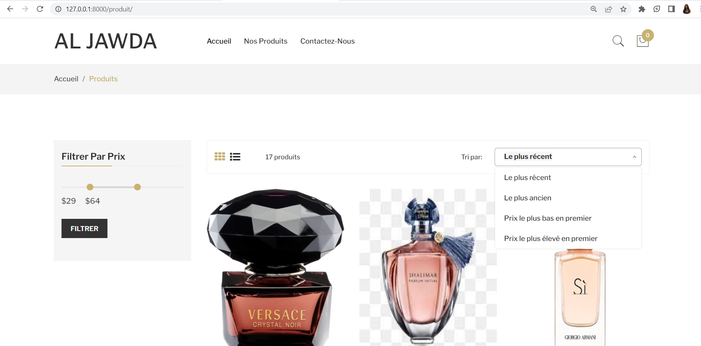
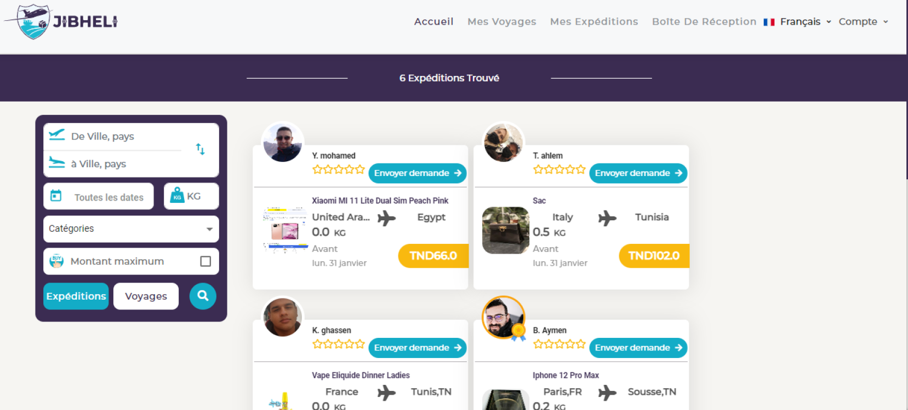
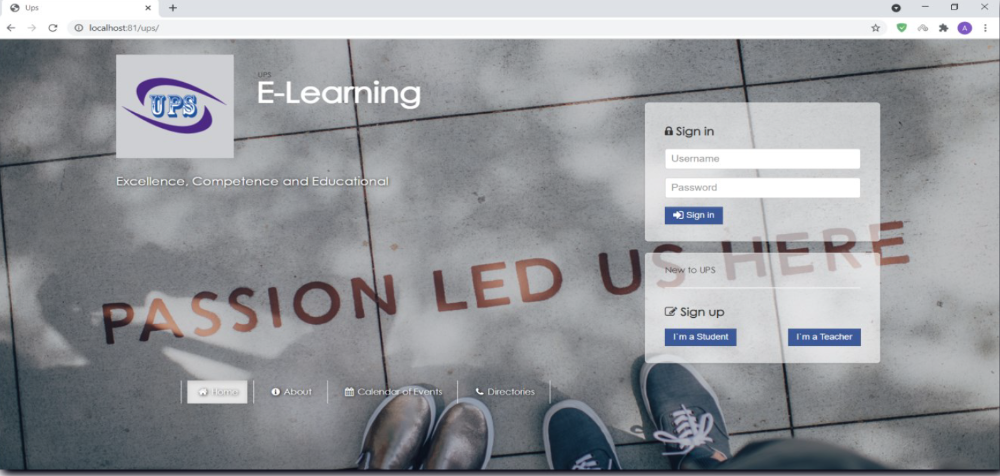
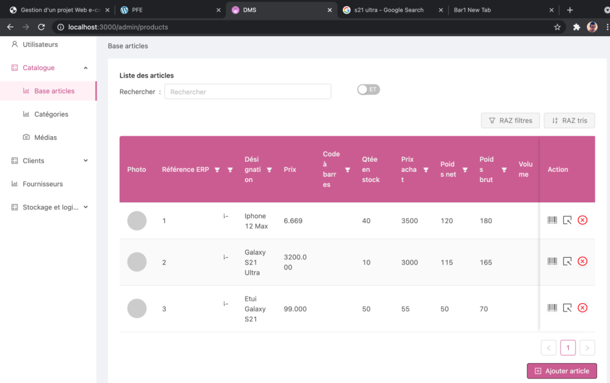
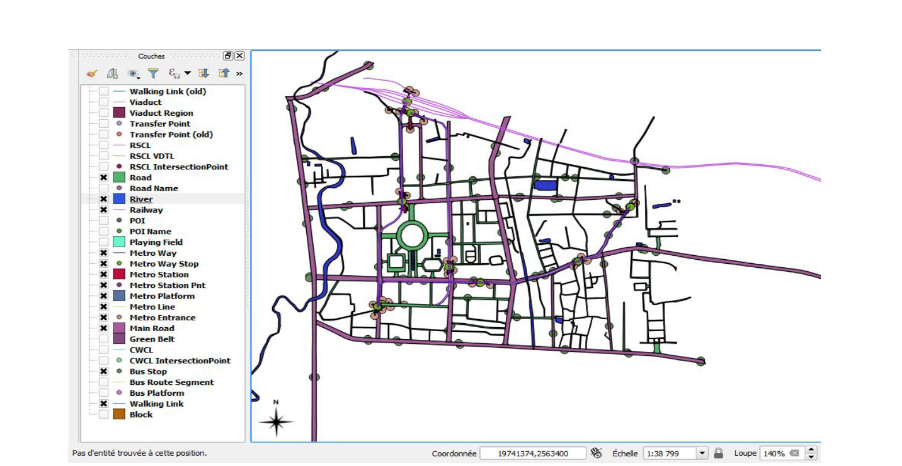
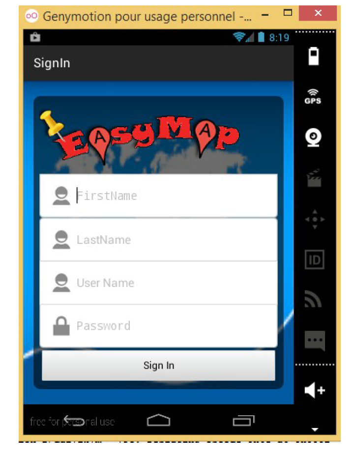
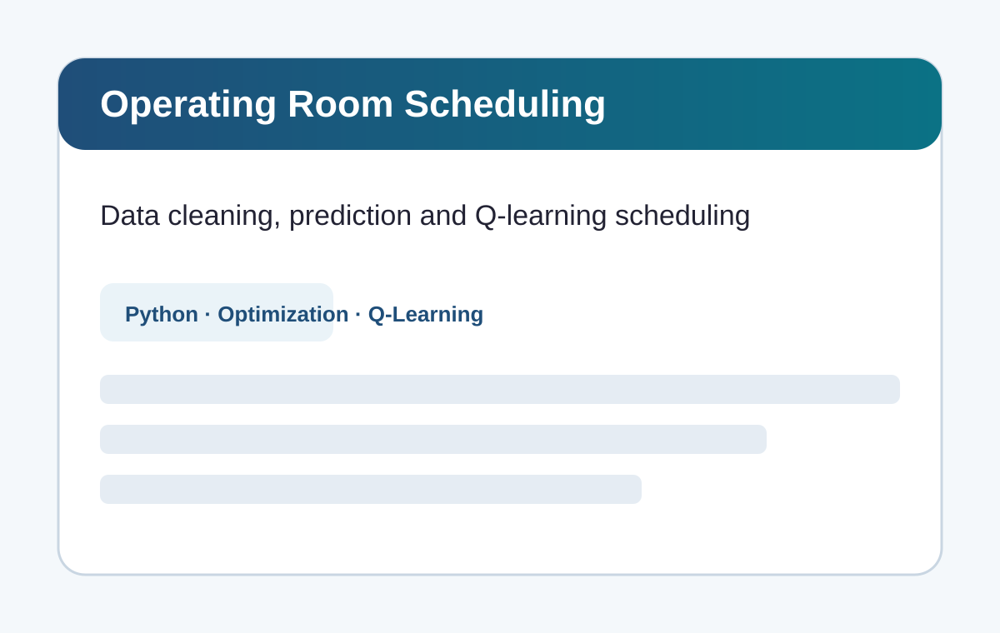
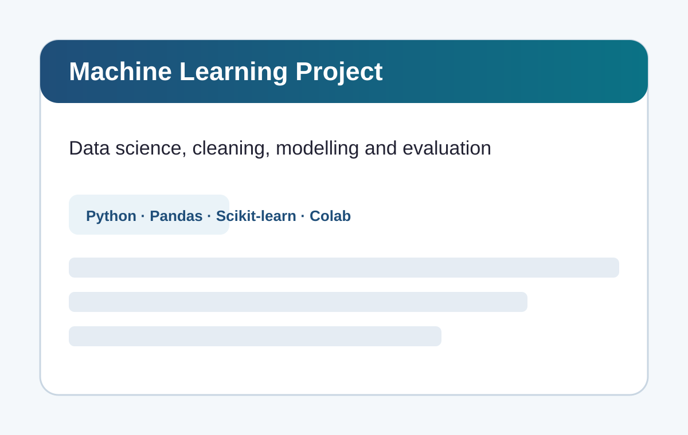
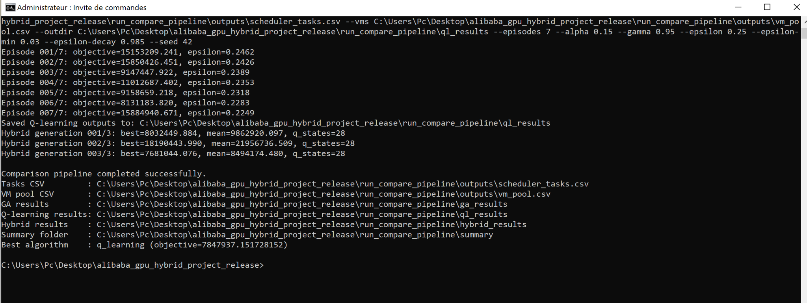

<section id="projects" class="section light"><div class="container"><div class="section-header"><span class="section-tag" data-fr="Projets" data-en="Projects">Projets</span><h2 data-fr="Featured projects for recruiters and clients" data-en="Featured projects for recruiters and clients">Featured projects for recruiters and clients</h2><p data-fr="Chaque fiche projet détaille le contexte, les fonctionnalités, les technologies et les captures disponibles." data-en="Each project page details the context, features, technologies and available screenshots.">Chaque fiche projet détaille le contexte, les fonctionnalités, les technologies et les captures disponibles.</p></div><div class="projects-grid"><article class="project-card">
      
      <div class="project-body">
        <div class="project-category">Web / E-commerce · 2023</div>
        <h3 data-fr="AL JAWDA — E-commerce de parfums" data-en="AL JAWDA — Perfume e-commerce platform">AL JAWDA — E-commerce de parfums</h3>
        <p data-fr="Plateforme e-commerce de vente en ligne de parfums orientaux, conçue avec Symfony pour gérer les produits, les comptes clients, le stock, les commandes, le panier, les factures et le tableau de bord administrateur." data-en="E-commerce platform for online perfume sales, built with Symfony to manage products, customer accounts, stock, orders, shopping cart, invoices and an admin dashboard.">Plateforme e-commerce de vente en ligne de parfums orientaux, conçue avec Symfony pour gérer les produits, les comptes clients, le stock, les commandes, le panier, les factures et le tableau de bord administrateur.</p>
        <div class="tech-stack"><span>Symfony</span><span>PHP</span><span>Twig</span><span>Doctrine</span><span>MySQL</span><span>Bootstrap</span></div>
        <a class="project-link" href="projects/al-jawda-ecommerce.html" data-fr="Voir la fiche projet →" data-en="View project page →">Voir la fiche projet →</a>
      </div>
    </article>
<article class="project-card">
      
      <div class="project-body">
        <div class="project-category">Full-stack / Logistics · 2022</div>
        <h3 data-fr="JIBHELI — Plateforme collaborative de transport de colis" data-en="JIBHELI — Collaborative shipment and traveler matching platform">JIBHELI — Plateforme collaborative de transport de colis</h3>
        <p data-fr="Application web reliant des voyageurs disposant d’espace dans leurs bagages avec des utilisateurs souhaitant transporter des produits depuis l’étranger, avec gestion des expéditions, voyages, demandes, deals et matching." data-en="Web application connecting travelers with available luggage space to shoppers needing product delivery from abroad, including shipment, trip, request, deal and matching management.">Application web reliant des voyageurs disposant d’espace dans leurs bagages avec des utilisateurs souhaitant transporter des produits depuis l’étranger, avec gestion des expéditions, voyages, demandes, deals et matching.</p>
        <div class="tech-stack"><span>Angular</span><span>TypeScript</span><span>Node.js</span><span>Express.js</span><span>MongoDB</span><span>FCM</span></div>
        <a class="project-link" href="projects/jibheli-shipment-platform.html" data-fr="Voir la fiche projet →" data-en="View project page →">Voir la fiche projet →</a>
      </div>
    </article>
<article class="project-card">
      
      <div class="project-body">
        <div class="project-category">Web / Education · 2021</div>
        <h3 data-fr="UPS E-learning — Plateforme de formation à distance" data-en="UPS E-learning — Distance learning platform">UPS E-learning — Plateforme de formation à distance</h3>
        <p data-fr="Plateforme web de formation à distance pour gérer les apprenants, formateurs, cours, ressources téléchargeables, quiz, devoirs, messagerie et calendrier des événements." data-en="Distance learning web platform for managing learners, teachers, courses, downloadable resources, quizzes, assignments, messaging and event calendars.">Plateforme web de formation à distance pour gérer les apprenants, formateurs, cours, ressources téléchargeables, quiz, devoirs, messagerie et calendrier des événements.</p>
        <div class="tech-stack"><span>PHP</span><span>MySQL</span><span>Bootstrap 5</span><span>JavaScript</span><span>HTML</span><span>CSS</span></div>
        <a class="project-link" href="projects/ups-elearning.html" data-fr="Voir la fiche projet →" data-en="View project page →">Voir la fiche projet →</a>
      </div>
    </article>
<article class="project-card">
      
      <div class="project-body">
        <div class="project-category">Web / Business management · 2021</div>
        <h3 data-fr="Shop24 DMS — Gestion clients, stock et commandes" data-en="Shop24 DMS — Client, stock and order management">Shop24 DMS — Gestion clients, stock et commandes</h3>
        <p data-fr="Application web de gestion des clients d’un fournisseur de matériel informatique et téléphonie mobile, avec back-office administratif, catalogue produits, clients, commandes, précommandes et stock." data-en="Web application for managing customers of an IT and mobile equipment supplier, including admin back-office, product catalog, customers, orders, pre-orders and stock.">Application web de gestion des clients d’un fournisseur de matériel informatique et téléphonie mobile, avec back-office administratif, catalogue produits, clients, commandes, précommandes et stock.</p>
        <div class="tech-stack"><span>Node.js</span><span>Express.js</span><span>React.js</span><span>MongoDB</span><span>NoSQL</span><span>JavaScript</span></div>
        <a class="project-link" href="projects/shop24-dms.html" data-fr="Voir la fiche projet →" data-en="View project page →">Voir la fiche projet →</a>
      </div>
    </article>
<article class="project-card">
      
      <div class="project-body">
        <div class="project-category">Optimization / Research · 2022</div>
        <h3 data-fr="Optimisation du transport multimodal de Guangzhou" data-en="Guangzhou multimodal transportation optimization">Optimisation du transport multimodal de Guangzhou</h3>
        <p data-fr="Projet d’optimisation du plus court circuit hamiltonien dans une agglomération de graphes superposés appliquée à un réseau de transport multimodal de Guangzhou : routes, métro, bus, voies ferrées, points de transfert et liens piétons." data-en="Optimization project for the shortest Hamiltonian circuit in an agglomeration of superimposed graphs applied to Guangzhou multimodal transport data: roads, metro, bus, railway, transfer points and walking links.">Projet d’optimisation du plus court circuit hamiltonien dans une agglomération de graphes superposés appliquée à un réseau de transport multimodal de Guangzhou : routes, métro, bus, voies ferrées, points de transfert et liens piétons.</p>
        <div class="tech-stack"><span>Java</span><span>JADE</span><span>SQL</span><span>QGIS</span><span>Genetic Algorithm</span><span>Dijkstra</span></div>
        <a class="project-link" href="projects/guangzhou-transport-optimization.html" data-fr="Voir la fiche projet →" data-en="View project page →">Voir la fiche projet →</a>
      </div>
    </article>
<article class="project-card">
      
      <div class="project-body">
        <div class="project-category">Mobile / Maps · 2022</div>
        <h3 data-fr="EasyMap — Application mobile et web de plus court chemin" data-en="EasyMap — Mobile and web shortest path application">EasyMap — Application mobile et web de plus court chemin</h3>
        <p data-fr="Application Android et web permettant de gérer des points géographiques et de rechercher le plus court chemin sur carte avec une approche d’optimisation par algorithme génétique." data-en="Android and web application for managing geographic points and searching for the shortest path on a map using a genetic algorithm optimization approach.">Application Android et web permettant de gérer des points géographiques et de rechercher le plus court chemin sur carte avec une approche d’optimisation par algorithme génétique.</p>
        <div class="tech-stack"><span>Android</span><span>Java</span><span>PHP</span><span>HTML</span><span>CSS</span><span>SQL</span></div>
        <a class="project-link" href="projects/easymap-shortest-path.html" data-fr="Voir la fiche projet →" data-en="View project page →">Voir la fiche projet →</a>
      </div>
    </article>
<article class="project-card">
      
      <div class="project-body">
        <div class="project-category">Healthcare / Optimization · 2025</div>
        <h3 data-fr="Ordonnancement des blocs opératoires — Data, ML et Q-Learning" data-en="Operating room scheduling — Data, ML and Q-Learning">Ordonnancement des blocs opératoires — Data, ML et Q-Learning</h3>
        <p data-fr="Projet en cours autour de la préparation et l’exploitation de données de blocs opératoires : nettoyage, structuration, modélisation prédictive et optimisation de l’ordonnancement par Q-Learning." data-en="Ongoing project around operating room data preparation and exploitation: cleaning, structuring, predictive modeling and scheduling optimization using Q-Learning.">Projet en cours autour de la préparation et l’exploitation de données de blocs opératoires : nettoyage, structuration, modélisation prédictive et optimisation de l’ordonnancement par Q-Learning.</p>
        <div class="tech-stack"><span>Python</span><span>Pandas</span><span>NumPy</span><span>Scikit-learn</span><span>Data Cleaning</span><span>Logistic Regression</span></div>
        <a class="project-link" href="projects/operating-room-scheduling.html" data-fr="Voir la fiche projet →" data-en="View project page →">Voir la fiche projet →</a>
      </div>
    </article>
<article class="project-card">
      
      <div class="project-body">
        <div class="project-category">Machine Learning · 2025</div>
        <h3 data-fr="K-Means Clustering — Projet freelance Machine Learning" data-en="K-Means Clustering — Freelance Machine Learning project">K-Means Clustering — Projet freelance Machine Learning</h3>
        <p data-fr="Projet de segmentation non supervisée avec K-Means pour regrouper des observations selon leurs similarités, analyser les clusters et produire des visualisations interprétables." data-en="Unsupervised segmentation project using K-Means to group observations by similarity, analyze clusters and generate interpretable visualizations.">Projet de segmentation non supervisée avec K-Means pour regrouper des observations selon leurs similarités, analyser les clusters et produire des visualisations interprétables.</p>
        <div class="tech-stack"><span>Python</span><span>Pandas</span><span>NumPy</span><span>Scikit-learn</span><span>K-Means</span><span>Clustering</span></div>
        <a class="project-link" href="projects/kmeans-clustering-freelance.html" data-fr="Voir la fiche projet →" data-en="View project page →">Voir la fiche projet →</a>
      </div>
    </article>
<article class="project-card">
      
      <div class="project-body">
        <div class="project-category">Healthcare / Machine Learning · 2025</div>
        <h3 data-fr="Tumor Detection — Logistic Regression" data-en="Tumor Detection — Logistic Regression">Tumor Detection — Logistic Regression</h3>
        <p data-fr="Projet de classification binaire appliqué à la détection de tumeurs avec régression logistique, préparation des données, entraînement du modèle et évaluation par métriques de classification." data-en="Binary classification project for tumor detection using logistic regression, including data preparation, model training and evaluation through classification metrics.">Projet de classification binaire appliqué à la détection de tumeurs avec régression logistique, préparation des données, entraînement du modèle et évaluation par métriques de classification.</p>
        <div class="tech-stack"><span>Python</span><span>Pandas</span><span>Scikit-learn</span><span>Logistic Regression</span><span>Classification</span><span>Confusion Matrix</span></div>
        <a class="project-link" href="projects/tumor-logistic-regression.html" data-fr="Voir la fiche projet →" data-en="View project page →">Voir la fiche projet →</a>
      </div>
    </article>
<article class="project-card">
      
      <div class="project-body">
        <div class="project-category">Optimization / Cloud AI · 2025</div>
        <h3 data-fr="Hybrid GA + Q-Learning — Cloud task scheduling" data-en="Hybrid GA + Q-Learning — Cloud task scheduling">Hybrid GA + Q-Learning — Cloud task scheduling</h3>
        <p data-fr="Framework hybride combinant algorithme génétique et Q-Learning pour l’ordonnancement de tâches dépendantes dans des environnements cloud virtualisés avec ressources CPU/GPU hétérogènes." data-en="Hybrid framework combining a Genetic Algorithm and Q-Learning for scheduling dependent tasks in virtualized cloud environments with heterogeneous CPU/GPU resources.">Framework hybride combinant algorithme génétique et Q-Learning pour l’ordonnancement de tâches dépendantes dans des environnements cloud virtualisés avec ressources CPU/GPU hétérogènes.</p>
        <div class="tech-stack"><span>Python</span><span>Genetic Algorithm</span><span>Q-Learning</span><span>Reinforcement Learning</span><span>Cloud Scheduling</span><span>CPU/GPU VMs</span></div>
        <a class="project-link" href="projects/cloud-ga-qlearning-scheduling.html" data-fr="Voir la fiche projet →" data-en="View project page →">Voir la fiche projet →</a>
      </div>
    </article></div></div></section>